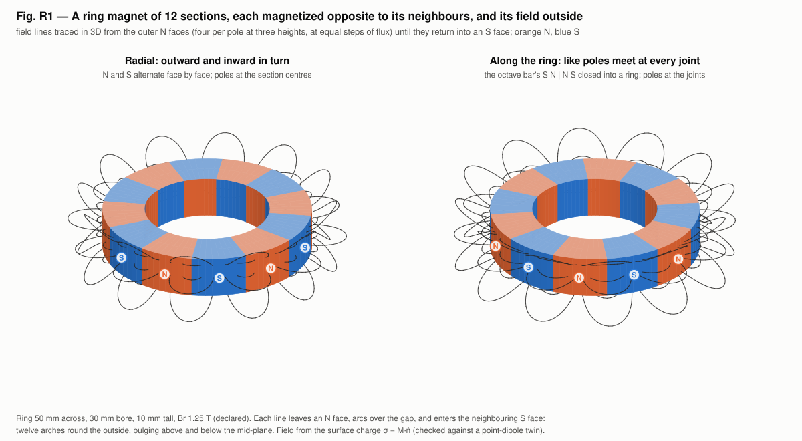
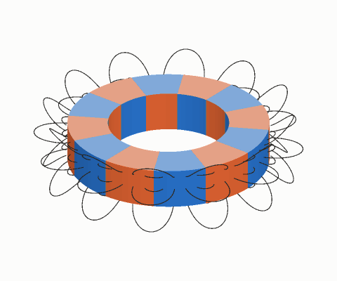
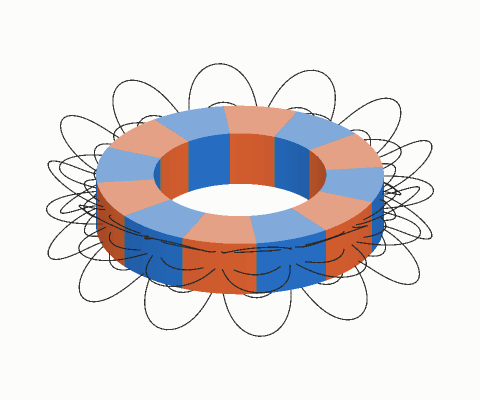
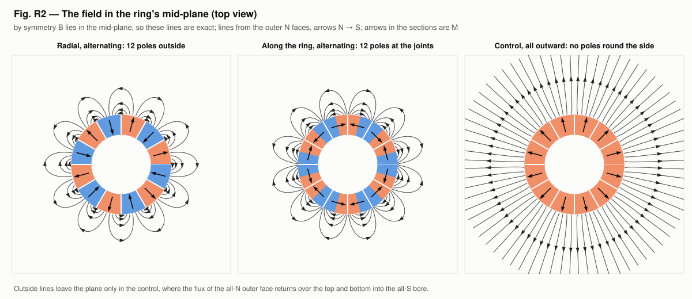
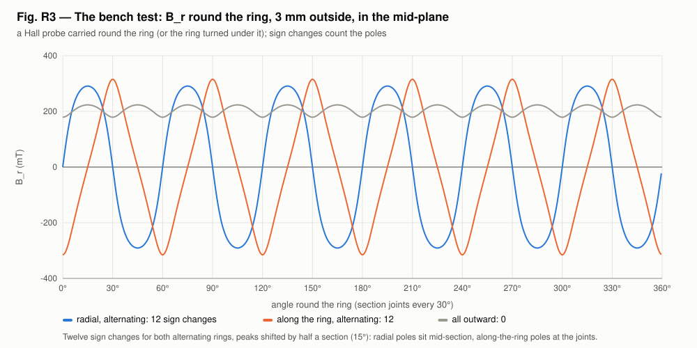

<!-- SPDX-License-Identifier: GPL-3.0-only OR LicenseRef-kronspice-Commercial -->
<!-- Copyright (C) 2026 Franklin Amador -->
<meta charset="utf-8">
<meta name="viewport" content="width=device-width, initial-scale=1, viewport-fit=cover">
<title>Twelve-Section Ring Magnet</title>
<meta name="claude:viewport-fit-sides" content="cover">
<link rel="preconnect" href="https://fonts.googleapis.com">
<link rel="stylesheet" href="https://fonts.googleapis.com/css2?family=IBM+Plex+Sans:ital,wght@0,400;0,500;0,600;1,400&family=IBM+Plex+Mono:wght@400;500&family=IBM+Plex+Serif:wght@500;600&display=swap">
<style>
/* Layout: one reading column (~68ch) with figures allowed to run wider; a lab-report masthead; sections follow Part 5 of the run. */
:root {
  --bg: #f6f7f8;
  --paper: #ffffff;
  --fg: #16191d;
  --muted: #59606a;
  --rule: #dde1e6;
  --accent: #2a78d6;   /* S, and the figures' blue */
  --north: #d9582a;    /* N, the figures' orange */
  --code-bg: #eef1f4;
  --display: "IBM Plex Serif", Georgia, "Times New Roman", serif;
  --body: "IBM Plex Sans", "Segoe UI", system-ui, -apple-system, sans-serif;
  --mono: "IBM Plex Mono", ui-monospace, "Cascadia Mono", Consolas, monospace;
}
@media (prefers-color-scheme: dark) {
  :root:not([data-theme="light"]) {
    --bg: #111418; --paper: #181c21; --fg: #e6e9ed; --muted: #9aa3ad; --rule: #2b3139;
    --accent: #5b9be6; --north: #ee7f52; --code-bg: #1f252c; color-scheme: dark;
  }
}
:root[data-theme="dark"] {
  --bg: #111418; --paper: #181c21; --fg: #e6e9ed; --muted: #9aa3ad; --rule: #2b3139;
  --accent: #5b9be6; --north: #ee7f52; --code-bg: #1f252c; color-scheme: dark;
}
* { box-sizing: border-box; }
body {
  background: var(--bg); color: var(--fg); font-family: var(--body);
  font-size: 1rem; line-height: 1.6; margin: 0;
  padding-left: max(16px, env(safe-area-inset-left, 0px));
  padding-right: max(16px, env(safe-area-inset-right, 0px));
}
main { max-width: 68rem; margin: 0 auto; padding-block: 2.5rem 4rem; display: grid; gap: 2.75rem; }
.col { max-width: 44rem; display: grid; gap: 0.9rem; min-width: 0; }
header.mast { display: grid; gap: 0.6rem; border-bottom: 1px solid var(--rule); padding-bottom: 1.6rem; }
.eyebrow { font-family: var(--mono); font-size: 0.78rem; letter-spacing: 0.08em; text-transform: uppercase; color: var(--muted); }
h1, h2, h3 { font-family: var(--display); font-weight: 600; line-height: 1.2; text-wrap: balance; margin: 0; }
h1 { font-size: clamp(1.9rem, 4.5vw, 2.7rem); }
h2 { font-size: 1.55rem; }
h3 { font-size: 1.12rem; font-family: var(--body); font-weight: 600; }
p { margin: 0; }
.lede { font-size: 1.1rem; color: var(--muted); max-width: 44rem; }
blockquote { margin: 0; padding: 0.2rem 0 0.2rem 1rem; border-left: 3px solid var(--north); font-family: var(--display); font-size: 1.15rem; font-style: italic; }
.meta { display: flex; flex-wrap: wrap; gap: 0.4rem 1.4rem; font-family: var(--mono); font-size: 0.82rem; color: var(--muted); }
.n { color: var(--north); font-weight: 600; }
.s { color: var(--accent); font-weight: 600; }
section { display: grid; gap: 1.2rem; }
.part { display: flex; align-items: baseline; gap: 0.8rem; }
.part .num { font-family: var(--mono); font-size: 0.85rem; color: var(--muted); }
ul { margin: 0; padding-left: 1.2rem; display: grid; gap: 0.35rem; }
code { font-family: var(--mono); font-size: 0.88em; background: var(--code-bg); padding: 0.05em 0.35em; border-radius: 3px; }
pre { margin: 0; background: var(--code-bg); padding: 0.9rem 1rem; border-radius: 6px; overflow-x: auto; font-family: var(--mono); font-size: 0.85rem; line-height: 1.5; }
.tablewrap { overflow-x: auto; }
table { border-collapse: collapse; width: 100%; font-size: 0.92rem; font-variant-numeric: tabular-nums; }
th, td { text-align: left; padding: 0.5rem 0.75rem 0.5rem 0; border-bottom: 1px solid var(--rule); vertical-align: top; }
th { font-weight: 600; font-size: 0.8rem; letter-spacing: 0.03em; color: var(--muted); }
td.num { font-family: var(--mono); font-size: 0.88rem; white-space: nowrap; }
figure { margin: 0; display: grid; gap: 0.55rem; }
figure .plate { background: #fcfcfb; border: 1px solid var(--rule); border-radius: 6px; padding: 0.4rem; overflow-x: auto; }
figure img { display: block; width: 100%; height: auto; max-width: 100%; }
figcaption { font-size: 0.88rem; color: var(--muted); max-width: 52rem; }
figcaption b { color: var(--fg); font-weight: 600; }
.pair { display: grid; grid-template-columns: repeat(auto-fit, minmax(min(100%, 20rem), 1fr)); gap: 1.2rem; }
.pair figure .plate { padding: 0; }
.status { display: grid; gap: 0.5rem; padding: 1.1rem 1.25rem; background: var(--paper); border: 1px solid var(--rule); border-left: 4px solid var(--accent); border-radius: 6px; }
.status .label { font-family: var(--mono); font-size: 0.78rem; letter-spacing: 0.08em; text-transform: uppercase; color: var(--muted); }
footer { border-top: 1px solid var(--rule); padding-top: 1.4rem; display: grid; gap: 0.8rem; font-size: 0.9rem; color: var(--muted); }
a { color: var(--accent); }
a:focus-visible { outline: 2px solid var(--accent); outline-offset: 2px; }
@media (prefers-reduced-motion: reduce) { .gif-note::after { content: " (animations play as GIFs; pause them in your browser if needed)"; } }
</style>

<main>
  <header class="mast">
    <span class="eyebrow">kronspice · examples/octave_magnet · hypothesis H33, Part 5 · 5 November 2026</span>
    <h1>A ring magnet of twelve opposite sections</h1>
    <p class="lede">The octave bar bent into a ring: twelve 30° sections, each magnetized opposite to its neighbours. The field it makes outside the ring in 3D, the scan a Hall probe would record round it, and a pickup coil beside it in kronspice.</p>
    <div class="meta"><span>Companion to the <a href="report.html">octave bar magnet report</a></span><span>Result: 12 poles outside, 0 for the control</span></div>
  </header>

  <section>
    <div class="col">
      <div class="part"><span class="num">Part 5</span><h2>The ring and its field in 3D</h2></div>
      <p>A ring magnet cut into twelve 30° sections, each magnetized opposite to its neighbours. There are two ways to make neighbours opposite, and both are built, with a control:</p>
      <ul>
        <li><b>Radial.</b> Each section points outward or inward in turn, so the outer face reads <span class="n">N</span> <span class="s">S</span> <span class="n">N</span> <span class="s">S</span> … This is the standard multipole ring of motors, couplings and encoders.</li>
        <li><b>Along the ring.</b> Each section points clockwise or anticlockwise in turn, so like poles meet at every joint (<span class="n">N</span>|<span class="n">N</span>, <span class="s">S</span>|<span class="s">S</span>). This is the octave bar's four-segment magnetization (S N | N S | …) closed into a ring; its poles are consequent poles at the joints.</li>
        <li><b>Control.</b> All twelve sections point outward.</li>
      </ul>
      <p>The ring is 50 mm across, with a 30 mm bore, 10 mm tall, Br 1.25 T (declared). Each section is uniformly magnetized, the way segmented magnets are made, so all its magnetic charge sits on its surface, σ = M·n̂: the outer arc, the inner arc and the two cut faces. Outside the magnet B = μ0H is the Coulomb field of that charge. Field lines are traced in 3D from the outer N faces, at equal steps of flux, until they return into an S face.</p>
    </div>
    <figure>
      <div class="plate"></div>
      <figcaption><b>Fig. R1.</b> The ring in 3D, <span class="n">orange N</span>, <span class="s">blue S</span>. Every line leaves an N pole and arches over to the neighbouring S pole: a crown of twelve arches round the outside, flat at mid-height and bulging above and below it. The two versions look alike from outside; their poles are half a section (15°) apart.</figcaption>
    </figure>
    <div class="pair">
      <figure>
        <div class="plate"></div>
        <figcaption><b>Turntable, radial.</b> Poles at the middle of each section.</figcaption>
      </figure>
      <figure>
        <div class="plate"></div>
        <figcaption><b>Turntable, along the ring.</b> Each section is N at one end and S at the other; poles at the joints.</figcaption>
      </figure>
    </div>
    <figure>
      <div class="plate"></div>
      <figcaption><b>Fig. R2.</b> The field in the mid-plane, seen from above. By symmetry B lies in that plane, so these lines are exact. Arrows in the sections show M. The control's outer face is all N and its bore all S: its flux leaves radially and returns over the top and bottom into the bore, so no lines close in the plane.</figcaption>
    </figure>
  </section>

  <section>
    <div class="col">
      <h3>The field round the outside</h3>
      <p>B<sub>r</sub> 3 mm outside the outer face, in the mid-plane: the scan a Hall probe makes when it is carried round the ring.</p>
      <div class="tablewrap"><table>
        <thead><tr><th>Ring</th><th>Sign changes</th><th>Peak |B<sub>r</sub>|</th><th>N poles at</th></tr></thead>
        <tbody>
          <tr><td>Radial, alternating</td><td class="num">12</td><td class="num">291 mT</td><td>15°, 75°, 135°, 195°, 255°, 315° (section centres)</td></tr>
          <tr><td>Along the ring, alternating</td><td class="num">12</td><td class="num">315 mT</td><td>30°, 90°, 150°, 210°, 270°, 330° (joints)</td></tr>
          <tr><td>All outward (control)</td><td class="num">0</td><td class="num">223 mT</td><td>none (B<sub>r</sub> &gt; 0 all round)</td></tr>
        </tbody>
      </table></div>
      <p>The field falls off quickly with distance, because neighbouring poles cancel.</p>
    </div>
    <figure>
      <div class="plate"></div>
      <figcaption><b>Fig. R3.</b> B<sub>r</sub> round the ring, 3 mm outside. Twelve sign changes for both alternating rings, shifted by 15° from each other; none for the all-outward control.</figcaption>
    </figure>
  </section>

  <section>
    <div class="col">
      <h3>A pickup coil beside the turning ring, in kronspice</h3>
      <p>A 200-turn, 6 mm pickup coil faces the outer side 1.5 mm out. Its resistance (8.26 Ω, from the wire) and inductance (246 µH, Wheeler's multilayer formula) are declared. It drives an 8.2 Ω load while the radial ring turns at 3000 rpm.</p>
      <div class="tablewrap"><table>
        <tbody>
          <tr><td>Electrical cycles per revolution</td><td class="num">6 (300 Hz), one per pole pair</td></tr>
          <tr><td>Open-circuit EMF</td><td class="num">6.23 V peak</td></tr>
          <tr><td>Across the load</td><td class="num">1.754 V rms, 375 mW</td></tr>
          <tr><td>Ledger over two revolutions</td><td class="num">in 3.01119×10⁻² J = heat 3.01119×10⁻² J + Δstored −1.5×10⁻⁷ J</td></tr>
          <tr><td>Ledger residual</td><td class="num">5.8×10⁻⁶</td></tr>
        </tbody>
      </table></div>
      <p>Every joule the load receives is work done turning the ring; the coil's EMF source stands in for the shaft.</p>
    </div>
  </section>

  <section>
    <div class="col">
      <h3>Checks on the ring model</h3>
      <div class="tablewrap"><table>
        <thead><tr><th>Check</th><th>Radial</th><th>Along the ring</th></tr></thead>
        <tbody>
          <tr><td>Surface charge against a point-dipole twin (m = M·dV), 6 points outside</td><td class="num">7.8×10⁻⁵ of |B|</td><td class="num">7.9×10⁻⁵</td></tr>
          <tr><td>Net magnetic charge, of Σ|Q|</td><td class="num">5×10⁻¹⁷</td><td class="num">2×10⁻¹⁷</td></tr>
          <tr><td>∇·B and ∇×B outside, of |∇B|</td><td class="num">1×10⁻⁷, 3×10⁻⁷</td><td class="num">3×10⁻⁷, 1×10⁻⁷</td></tr>
        </tbody>
      </table></div>
      <p>The example's tests (<code>main_test.go</code>, <code>ring_test.go</code>) pass, including under the race detector.</p>
    </div>
  </section>

  <section>
    <div class="col">
      <div class="status">
        <span class="label">What it means for H33</span>
        <p>Russell's like-poles-meet pattern closed into a ring gives twelve real poles, as many as the standard radial multipole ring. The control shows the pattern has to be built into the magnetization: a ring magnetized one way all round has no poles round its side.</p>
        <p>The bar's own status is unchanged: whether an ordinary bar carries four pairs is decided by the Hall-probe scan in the <a href="report.html">bar report</a>.</p>
      </div>
    </div>
  </section>

  <footer>
    <div class="col">
      <span class="eyebrow">Reproduce</span>
      <pre>go run ./examples/octave_magnet -svg examples/octave_magnet/viz   # Part 5, Figs. R1–R3, GIFs
go test -run Ring ./examples/octave_magnet</pre>
      <span class="eyebrow">Code</span>
      <p><code>ring.go</code> (sections, surface charge, dipole twin, scans, field lines), <code>ring_pickup.go</code> (the coil in kronspice), <code>ring_figures.go</code> and <code>raster.go</code> (figures and GIFs), <code>ring_test.go</code>.</p>
      <span class="eyebrow">Sources</span>
      <ul>
        <li>W. Russell, “Analysis of the Octave Bar Magnet” (painting). The hypothesis source.</li>
        <li>J. D. Jackson, <i>Classical Electrodynamics</i>, 3rd ed., §5.6 (eq. 5.56, dipole field), §5.9 (magnetic surface charge).</li>
        <li>H. A. Wheeler, “Simple inductance formulas for radio coils,” <i>Proc. IRE</i> 16, 1398 (1928).</li>
      </ul>
    </div>
  </footer>
</main>
